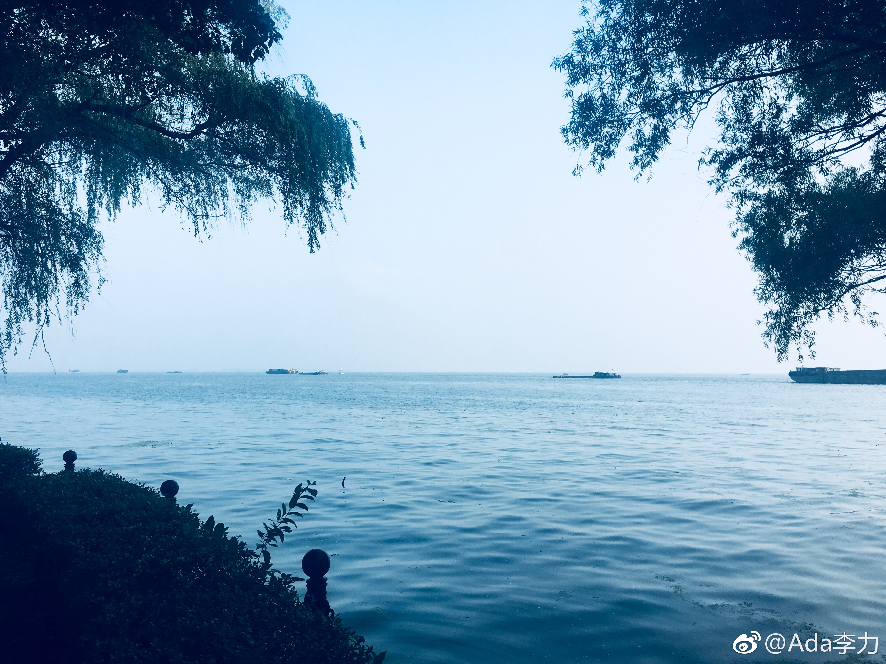

妹妹每隔两三年回来一次，是家庭聚齐的重要契机。上一次是自驾游华东几个景点转了一周，几乎每晚都要换个地方住，玩下来后累得很。这次聚会我坚决要求集中住一个地方，大家聊聊天，吃吃喝喝玩玩地过一周就好。
我觉得度假就是呆在舒服+环境优美的地方，想干啥就干啥，不想干啥就不干啥。
所以这次家庭聚会是租个提供餐饮的别墅，想出去玩就开车到附近转转。前两天姐姐妹妹带Arthur去了趟苏州游玩，我死活赖在屋里不肯同去。跟姣姣这点有共识：夏日度假，最舒服的还是在屋子里吹着空调，盖着被子，刷刷手机……
还是这次的度假方案比较好。
 上海·淀山湖风景区
上海·淀山湖风景区
我觉得度假就是呆在舒服+环境优美的地方，想干啥就干啥，不想干啥就不干啥。
所以这次家庭聚会是租个提供餐饮的别墅，想出去玩就开车到附近转转。前两天姐姐妹妹带Arthur去了趟苏州游玩，我死活赖在屋里不肯同去。跟姣姣这点有共识：夏日度假，最舒服的还是在屋子里吹着空调，盖着被子，刷刷手机……
还是这次的度假方案比较好。

- 